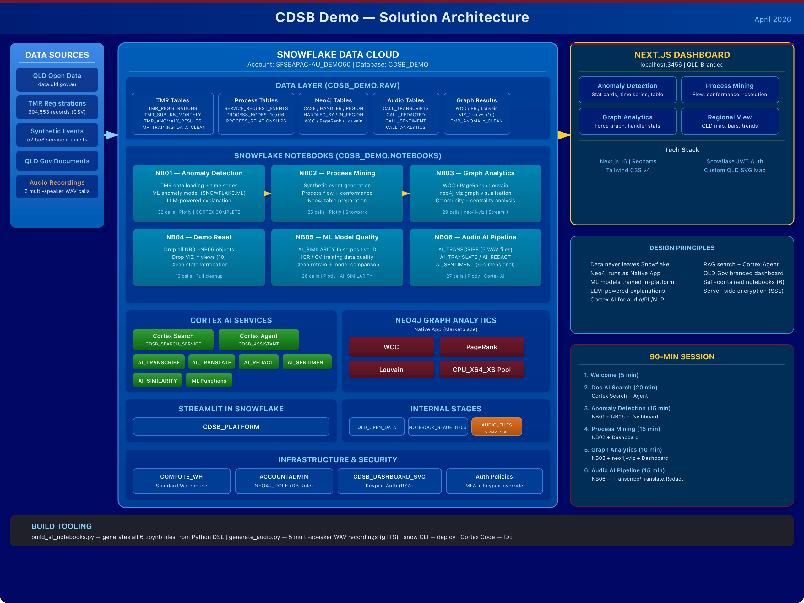

1 Solution Overview
This solution demonstrates Snowflake Cortex AI capabilities using real Queensland Government data. It covers document AI, anomaly detection, process mining, graph analytics, audio/video AI, and ML model quality — all running natively inside Snowflake.
Anomaly detection, process mining, graph analytics, demo reset, ML quality, audio AI pipeline
QLD Government-branded, 4-tab analytics dashboard with live Snowflake data
Streamlit control plane, Cortex Search (833K+ chunks), Cortex Agent, 9 gov sources
| Database | CDSB_DEMO (override with CDSB_DATABASE) |
| Schemas | RAW (data), NOTEBOOKS (notebooks) |
| Warehouse | COMPUTE_WH (override with CDSB_WAREHOUSE) |
| Connection | Your configured Snowflake CLI connection |
CDSB_DATABASE, CDSB_SCHEMA, CDSB_WAREHOUSE,
and SNOWFLAKE_CONNECTION_NAME. The Streamlit app auto-detects its database context at runtime.
See Build & Deploy for details.
| Snowflake ML | Anomaly Detection, Forecasting |
| Cortex AI | AI_TRANSCRIBE, AI_TRANSLATE, AI_REDACT, AI_SENTIMENT, AI_SIMILARITY |
| Cortex Search | RAG with arctic-embed-l-v2.0 |
| Cortex Agent | Claude Sonnet 4 orchestration |
| Neo4j | Graph Analytics (Native App/SPCS) |
| AI_PARSE_DOCUMENT | PDF/Word/TIFF text extraction |
2 Solution Architecture
The complete solution architecture (designed for 4:3 slide projection):

File: architecture.svg / architecture.png — viewBox 1280×960 (4:3)
3 Prerequisites
- ACCOUNTADMIN role
- Standard warehouse (
COMPUTE_WH) - Compute pool
CPU_X64_XSfor Streamlit + SPCS - External access integration for outbound HTTP
- Neo4j Graph Analytics installed from Marketplace
- Snowflake CLI v3.14.0+ (
snow --version) - Python 3.11+ with
snowflake-connector-python - Node.js 18+ (for dashboard)
librsvgfor SVG→PNG (brew install librsvg)gTTS+pydubfor audio generation
--connection <YOUR_CONNECTION>. Ensure your Snowflake CLI connection is configured:
snow connection test --connection <YOUR_CONNECTION>
Initial Data Setup
The TMR vehicle registration dataset (~42 MB, 304K rows) is sourced from QLD Open Data and is too large for version control. Run the setup script to download and stage it:
SNOWFLAKE_CONNECTION_NAME=<YOUR_CONNECTION> python setup_data.pyThis queries the CKAN API at data.qld.gov.au, downloads the latest CSV, converts encoding (UTF-16→UTF-8),
compresses it, and uploads to @QLD_OPEN_DATA/tmr/. NB01 (Anomaly Detection) loads from this stage via
COPY INTO.
4 Data Extraction Platform
The Streamlit-in-Snowflake control plane crawls 9 Queensland Government websites, downloads documents, parses them with AI, chunks the content, and exposes it via Cortex Search and a Cortex Agent.
Configured Sources (9)
| Source | Method | Cloudflare | File Types | Stage |
|---|---|---|---|---|
| CDSB | BFS | No | CDSB_DOCUMENTS | |
| QLD Gov | BFS | No | QLD_GOV_DOCUMENTS | |
| TMR | BFS | Yes | TMR_DOCUMENTS | |
| Education | BFS | Yes | EDU_DOCUMENTS | |
| Health | BFS | Yes | HEALTH_DOCUMENTS | |
| DPI | BFS | Yes | DPI_DOCUMENTS | |
| Police | BFS | No | POLICE_DOCUMENTS | |
| Publications | CKAN | No | PUBLICATIONS_DOCUMENTS | |
| QPS Reports | TARGETED | No | QPS_REPORTS |
Streamlit Control Plane
Object: CDSB_DEMO.RAW.CDSB_PLATFORM
- Manage Sources — Add/edit/delete extraction sources
- Run Extraction — Execute crawls, run pipeline
- Monitor — Overview metrics, run history, data inventory
- Search & Chat — Cortex Search + RAG chat with Agent
- Pipeline — Parse, unify, chunk stages individually
cd cdsb_platform
snow streamlit deploy --replace --connection <YOUR_CONNECTION>Runtime: SYSTEM$ST_CONTAINER_RUNTIME_PY3_11
Compute pool: CPU_X64_XS
SPCS Scheduled Scraper
A containerised all-in-one scraper runs as an hourly Snowflake Task:
-- Resume the hourly task
ALTER TASK CDSB_DEMO.RAW.CDSB_HOURLY_SCRAPER RESUME;
-- Or execute manually
EXECUTE TASK CDSB_DEMO.RAW.CDSB_HOURLY_SCRAPER;Current Data Volume
5 Snowflake Notebooks
All notebooks are deployed to CDSB_DEMO.NOTEBOOKS and can be run directly in Snowsight. They are generated programmatically from build_sf_notebooks.py.
Loads TMR new business registration data (304K records from QLD Open Data), aggregates to time series by region, trains a SNOWFLAKE.ML.ANOMALY_DETECTION model, detects anomalous spikes/drops, and uses AI_COMPLETE to generate natural-language explanations.
Key Objects Created
TMR_REGISTRATIONS | Raw registration data (304K rows) |
TMR_SUBURB_MONTHLY | Aggregated monthly time series |
TMR_ANOMALY_RESULTS | Anomaly detection output with bounds |
Generates synthetic government service request lifecycle events (52K+ events), discovers process patterns via SQL, performs conformance analysis against a baseline process, and prepares node/relationship tables for Neo4j graph projection.
Key Objects Created
SERVICE_REQUEST_EVENTS | Synthetic event log (52K rows) |
PROCESS_NODES | Node table for Neo4j (10,016 nodes) |
PROCESS_RELATIONSHIPS | Relationship table for Neo4j |
Uses the Neo4j Graph Analytics Native App (installed from Marketplace) to run WCC, Louvain community detection, and PageRank on the process mining graph. Includes interactive neo4j-viz graph visualisation and Streamlit widgets.
SE_SNOW_NEO4J_GRAPH_ANALYTICS.
Cleans up all objects created by NB01-NB06, including tables, views, ML models, and VIZ_* views. Run this before re-running the demo sequence to start from a clean state.
Analyses the quality of the anomaly detection model by identifying false positives using AI_SIMILARITY, performing IQR and CV analysis on training data, cleaning outliers, retraining the model, and comparing results.
Key Objects Created
TMR_TRAINING_DATA_CLEAN | Cleaned training dataset (view) |
tmr_anomaly_model_clean | Retrained ML model |
TMR_ANOMALY_RESULTS_CLEAN | Clean anomaly detection output |
Demonstrates Snowflake Cortex AI functions on 5 pre-staged multi-speaker WAV files: transcription with speaker diarisation, translation (Mandarin↔English), PII redaction, and 6-dimensional sentiment analysis.
Key Objects Created
CALL_SCENARIOS | Scenario metadata with FILENAME column |
CALL_TRANSCRIPTS | Full transcriptions with speaker segments |
CALL_TRANSLATIONS | Translated text |
CALL_REDACTED | PII-redacted transcripts |
CALL_SENTIMENT | 6-dimensional sentiment scores |
CALL_ANALYTICS | Aggregated call analytics |
AI_TRANSCRIBE is only available in AWS US West 2, US East 1, EU Central 1, and Azure East US 2. It is NOT available in ap-southeast-2 where this account resides. The notebook is designed for demonstration on a US-region account or when the feature becomes available in Sydney.
Notebook Execution Order
6 Next.js Dashboard
A QLD Government-branded analytics dashboard built with Next.js 16, Tailwind CSS v4, and Recharts. It connects directly to Snowflake using keypair authentication.
| Framework | Next.js 16.2.3 (Turbopack) |
| Styling | Tailwind CSS v4 |
| Charts | Recharts 2.15 |
| Icons | Lucide React |
| Auth | Snowflake JWT (keypair) |
| Service User | CDSB_DASHBOARD_SVC |
- Anomaly Detection — Stat cards, time series charts, anomaly table
- Process Mining — Process flow visualisation, conformance, resolution analysis
- Graph Analytics — Interactive force-directed graph, handler statistics
- Regional View — Custom QLD SVG map, regional bars, trend lines
Running the Dashboard
# From the project directory
cd cdsb-dashboard
./node_modules/.bin/next dev --port 3456
# Then open http://localhost:3456npx next dev — it prompts for package installation. Use the local binary directly. The --dir flag is not supported; you must cd into the project directory first.
Snowflake Connection
The dashboard authenticates via keypair:
| Service user | CDSB_DASHBOARD_SVC |
| Auth method | SNOWFLAKE_JWT (RSA keypair) |
| Private key | cdsb-dashboard/keys/rsa_key.p8 |
| Role | ACCOUNTADMIN |
| API routes | app/api/ — server-side Snowflake queries |
7 Audio AI Pipeline
Five synthetic multi-speaker WAV files simulate government call centre scenarios. They are generated locally and uploaded to a Snowflake internal stage with server-side encryption.
Audio Files
| File | Scenario |
|---|---|
call_001_licence_complaint.wav | Customer complaining about licence processing delays |
call_002_registration_thankyou.wav | Positive call thanking registration support |
call_003_elderly_portal_help.wav | Elderly person needing portal navigation assistance |
call_004_bilingual_mandarin.wav | Bilingual call (Mandarin + English) for translation demo |
call_005_fraud_report.wav | Fraud report with PII for redaction demo |
Stage Configuration
-- Stage with server-side encryption (required for AI_TRANSCRIBE)
@CDSB_DEMO.RAW.AUDIO_FILES
DIRECTORY = (ENABLE = TRUE)
ENCRYPTION = (TYPE = 'SNOWFLAKE_SSE')SNOWFLAKE_SSE encryption. The default client-side encryption is NOT supported.
Generate & Upload Audio
# Generate 5 WAV files locally
python session_demos/generate_audio.py
# Upload to Snowflake with SSE encryption
snow stage copy session_demos/audio_files/*.wav \
@CDSB_DEMO.RAW.AUDIO_FILES/ \
--connection <YOUR_CONNECTION> --overwriteCortex AI Functions Used
SELECT AI_TRANSCRIBE(
TO_FILE('@CDSB_DEMO.RAW.AUDIO_FILES', 'file.wav'),
{'timestamp_granularity': 'speaker'}
);Transcribes audio with speaker diarisation
SELECT AI_TRANSLATE(text, 'zh', 'en');24+ languages. Use '' for auto-detect source.
-- Redact PII
SELECT AI_REDACT(text);
-- Detect PII without redacting
SELECT AI_REDACT(text, NULL, NULL, 'detect');SELECT AI_SENTIMENT(text,
['frustrated','satisfied','confused',
'urgent','grateful','neutral']
);Returns OBJECT with category scores
8 Cortex Search & Agent
| Name | CDSB_DEMO.RAW.CDSB_SEARCH_SERVICE |
| Status | ACTIVE |
| Embedding | snowflake-arctic-embed-l-v2.0 |
| Refresh | INCREMENTAL |
| Source | CDSB_CHUNKS (833K+ rows) |
| Lag | 1 day |
| Name | CDSB_DEMO.RAW.CDSB_ASSISTANT |
| Model | Claude Sonnet 4 |
| Tools | Cortex Search + Web Search |
| Budget | 900s, 400K tokens |
Covers 6 QLD departments: CDSB, QLD Gov, TMR, Education, Health, DPI
Querying the Search Service
SELECT SNOWFLAKE.CORTEX.SEARCH(
'CDSB_DEMO.RAW.CDSB_SEARCH_SERVICE',
'road safety regulations',
{
'columns': ['chunk_content', 'title', 'source_url', 'domain'],
'limit': 10
}
) as results;9 Build & Deploy
Project File Structure
Build Notebooks
The build_sf_notebooks.py script uses a Python DSL with helpers: md(), py(), sql(), and save().
# Generate all 6 Snowflake-format .ipynb files (uses CDSB_DEMO defaults)
cd session_demos
python build_sf_notebooks.py
# To target a different database/warehouse:
CDSB_DATABASE=MY_DB CDSB_WAREHOUSE=MY_WH python build_sf_notebooks.pyDeploy Notebooks to Snowflake
# Step 1: Upload notebook to stage
snow stage copy sf_01_anomaly_detection.ipynb \
@CDSB_DEMO.NOTEBOOKS.NOTEBOOK_STAGE_01/ \
--connection <YOUR_CONNECTION> --overwrite
# Step 2: Create/replace the notebook object
snow notebook create CDSB_DEMO.NOTEBOOKS.ANOMALY_DETECTION \
-f @CDSB_DEMO.NOTEBOOKS.NOTEBOOK_STAGE_01/sf_01_anomaly_detection.ipynb \
--connection <YOUR_CONNECTION>Notebook Deployment Map
| Notebook | Source File | Stage | Snowflake Object |
|---|---|---|---|
| NB01 | sf_01_anomaly_detection.ipynb | NOTEBOOK_STAGE_01 | ANOMALY_DETECTION |
| NB02 | sf_02_process_mining.ipynb | NOTEBOOK_STAGE_02 | PROCESS_MINING |
| NB03 | sf_03_neo4j_graph_analytics.ipynb | NOTEBOOK_STAGE_03 | NEO4J_GRAPH_ANALYTICS |
| NB04 | sf_04_demo_reset.ipynb | NOTEBOOK_STAGE_04 | DEMO_RESET |
| NB05 | sf_05_ml_model_quality.ipynb | NOTEBOOK_STAGE_05 | ML_MODEL_QUALITY |
| NB06 | sf_06_audio_video_pipeline.ipynb | NOTEBOOK_STAGE_06 | AUDIO_VIDEO_PIPELINE |
Architecture Diagram Export
# Export SVG to PNG at 2x resolution
rsvg-convert -z 2 architecture.svg > architecture.pngDeploying to Your Own Account
The entire solution is designed to be portable. All components use environment variables with sensible defaults so you can deploy into any Snowflake account without modifying source code.
| Variable | Default | Used By |
|---|---|---|
SNOWFLAKE_CONNECTION_NAME | your connection name | CLI scripts, notebooks (local) |
CDSB_DATABASE | CDSB_DEMO | build_sf_notebooks.py, run_extraction.py, scraper.py |
CDSB_SCHEMA | RAW | build_sf_notebooks.py, run_extraction.py, scraper.py |
CDSB_WAREHOUSE | COMPUTE_WH | build_sf_notebooks.py, run_extraction.py |
SNOWFLAKE_ACCOUNT | your account identifier | Next.js dashboard |
SNOWFLAKE_USER | CDSB_DASHBOARD_SVC | Next.js dashboard (keypair auth) |
SNOWFLAKE_DATABASE | CDSB_DEMO | Next.js dashboard |
SNOWFLAKE_PRIVATE_KEY_PATH | ./keys/rsa_key.p8 | Next.js dashboard |
CDSB_SEARCH_SERVICE | <DB>.<SCHEMA>.QLD_GOVERNMENT | Streamlit Search & Chat page |
CDSB_AGENT_NAME | <DB>.<SCHEMA>.CDSB_ASSISTANT | Streamlit Search & Chat page |
Step-by-Step for a New Account
CREATE DATABASE IF NOT EXISTS MY_DATABASE;
CREATE SCHEMA IF NOT EXISTS MY_DATABASE.RAW;
CREATE SCHEMA IF NOT EXISTS MY_DATABASE.NOTEBOOKS;snowflake.yml — update the database and schema fields under the streamlit entity identifier.
cd session_demos
CDSB_DATABASE=MY_DATABASE CDSB_SCHEMA=RAW \
CDSB_WAREHOUSE=MY_WH python build_sf_notebooks.pycd cdsb_platform
snow streamlit deploy --replace --connection MY_CONN
cd ../session_demos
snow stage copy sf_01_anomaly_detection.ipynb \
@MY_DATABASE.NOTEBOOKS.NOTEBOOK_STAGE_01/ \
--connection MY_CONN --overwrite
snow notebook create MY_DATABASE.NOTEBOOKS.ANOMALY_DETECTION \
-f @MY_DATABASE.NOTEBOOKS.NOTEBOOK_STAGE_01/sf_01_anomaly_detection.ipynb \
--connection MY_CONN.env.example to .env.local:
cd cdsb-dashboard
cp .env.example .env.local
# Edit .env.local with your account, user, database
npm install && npm run dev -- --port 3456CREATE USER MY_DASHBOARD_SVC
RSA_PUBLIC_KEY='MIIBIjANBg...'
DEFAULT_ROLE = ACCOUNTADMIN
DEFAULT_WAREHOUSE = MY_WH;
GRANT ROLE ACCOUNTADMIN TO USER MY_DASHBOARD_SVC;10 90-Minute Session Guide
| # | Segment | Time | Duration | Components |
|---|---|---|---|---|
| 1 | Welcome & Cortex AI Overview | 0:00 | 5 min | Slides / whiteboard |
| 2 | Document AI & Search | 0:05 | 20 min | Streamlit Platform, Cortex Search, Agent |
| 3 | Anomaly Detection | 0:25 | 15 min | NB01 + NB05 + Dashboard |
| 4 | Process Mining | 0:40 | 15 min | NB02 + Dashboard |
| 5 | Graph Analytics | 0:55 | 10 min | NB03 + neo4j-viz + Dashboard |
| 6 | Audio AI Pipeline | 1:05 | 15 min | NB06 — Transcribe/Translate/Redact |
| 7 | Wrap-up & Next Steps | 1:20 | 10 min | Discussion |
Pre-Session Checklist
- Run
python setup_data.pyto download and stage TMR data - Verify Streamlit app
CDSB_PLATFORMis running - Verify Cortex Agent
CDSB_ASSISTANTresponds - Run NB04 (Demo Reset) for clean state
- Run NB01 (Anomaly Detection) end-to-end
- Run NB02 (Process Mining) end-to-end
- Confirm Neo4j Graph Analytics is installed from Marketplace
- Run NB03 (Neo4j Graph Analytics) end-to-end
- Start dashboard:
cd cdsb-dashboard && ./node_modules/.bin/next dev --port 3456 - Verify dashboard loads at
http://localhost:3456 - Have backup screenshots in case of network issues
What to Show Per Segment
- Open Streamlit app → Sources page (9 sources)
- Show Monitor → 833K chunks, 37K unified docs
- Search tab: query "CDSB strategic plan"
- Snowsight → Snowflake Intelligence → CDSB_ASSISTANT
- Run NB01 in Snowsight (or show pre-run output)
- Show anomaly detection results with bounds
- Show LLM explanation of anomalies
- Switch to Dashboard → Anomaly Detection tab
- Show Neo4j Native App in Marketplace
- Run NB03: WCC, Louvain, PageRank
- Show interactive neo4j-viz graph
- Switch to Dashboard → Graph Analytics tab
- Show 5 WAV files on stage
- Run AI_TRANSCRIBE with speaker diarisation
- Show AI_TRANSLATE (Mandarin → English)
- Show AI_REDACT (PII detection + redaction)
- Show AI_SENTIMENT (6-dimensional analysis)
11 Quick Reference
Key Snowflake Objects
| Object | Schema | Type | Purpose |
|---|---|---|---|
CDSB_PLATFORM | RAW | Streamlit App | Extraction control plane |
CDSB_SEARCH_SERVICE | RAW | Cortex Search | 833K+ chunks indexed |
CDSB_ASSISTANT | RAW | Cortex Agent | Claude Sonnet 4 assistant |
CDSB_HOURLY_SCRAPER | RAW | Task | Scheduled SPCS scraper |
ANOMALY_DETECTION | NOTEBOOKS | Notebook | NB01 |
PROCESS_MINING | NOTEBOOKS | Notebook | NB02 |
NEO4J_GRAPH_ANALYTICS | NOTEBOOKS | Notebook | NB03 |
DEMO_RESET | NOTEBOOKS | Notebook | NB04 |
ML_MODEL_QUALITY | NOTEBOOKS | Notebook | NB05 |
AUDIO_VIDEO_PIPELINE | NOTEBOOKS | Notebook | NB06 |
AUDIO_FILES | RAW | Stage | 5 WAV files (SSE encrypted) |
CDSB_DASHBOARD_SVC | — | User | Dashboard service account |
CPU_X64_XS | — | Compute Pool | SPCS + Streamlit runtime |
COMPUTE_WH | — | Warehouse | Standard compute |
Common Commands
# Test connection
snow connection test --connection <YOUR_CONNECTION>
# Download and stage TMR data (run once)
SNOWFLAKE_CONNECTION_NAME=<YOUR_CONNECTION> python setup_data.py
# Deploy Streamlit platform
cd cdsb_platform && snow streamlit deploy --replace --connection <YOUR_CONNECTION>
# Build notebooks
cd session_demos && python build_sf_notebooks.py
# Generate audio files
python generate_audio.py
# Upload audio to stage
snow stage copy audio_files/*.wav @CDSB_DEMO.RAW.AUDIO_FILES/ --connection <YOUR_CONNECTION> --overwrite
# Deploy a notebook
snow stage copy sf_01_anomaly_detection.ipynb @CDSB_DEMO.NOTEBOOKS.NOTEBOOK_STAGE_01/ --connection <YOUR_CONNECTION> --overwrite
snow notebook create CDSB_DEMO.NOTEBOOKS.ANOMALY_DETECTION -f @CDSB_DEMO.NOTEBOOKS.NOTEBOOK_STAGE_01/sf_01_anomaly_detection.ipynb --connection <YOUR_CONNECTION>
# Start dashboard
cd cdsb-dashboard && ./node_modules/.bin/next dev --port 3456
# Export architecture diagram
rsvg-convert -z 2 architecture.svg > architecture.pngEnvironment Variables
All components read these environment variables with sensible defaults. Set them to deploy into your own account.
| Variable | Default | Description |
|---|---|---|
SNOWFLAKE_CONNECTION_NAME | your connection name | Snowflake CLI connection name (scripts, notebooks) |
CDSB_DATABASE | CDSB_DEMO | Target database (notebooks, scraper, extraction) |
CDSB_SCHEMA | RAW | Target schema (notebooks, scraper, extraction) |
CDSB_WAREHOUSE | COMPUTE_WH | Compute warehouse (notebooks, extraction) |
SNOWFLAKE_ACCOUNT | your account identifier | Account identifier (dashboard) |
SNOWFLAKE_USER | CDSB_DASHBOARD_SVC | Service user for dashboard keypair auth |
SNOWFLAKE_DATABASE | CDSB_DEMO | Database for dashboard queries |
SNOWFLAKE_PRIVATE_KEY_PATH | keys/rsa_key.p8 | Dashboard keypair path |
CDSB_SEARCH_SERVICE | auto: DB.SCHEMA.QLD_GOVERNMENT | Override Cortex Search service name |
CDSB_AGENT_NAME | auto: DB.SCHEMA.CDSB_ASSISTANT | Override Cortex Agent name |